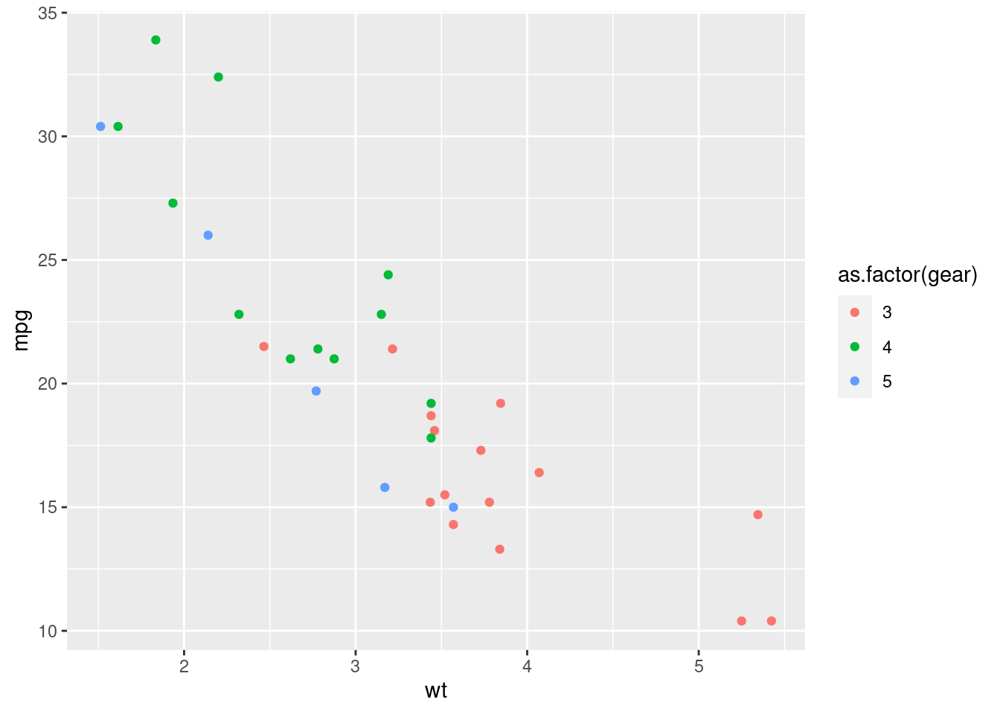

x <- 1:10
x
## [1] 1 2 3 4 5 6 7 8 9 10Homework No. x, DECS-461, Spring 2023
What is this document?
This Rmarkdown template is intended to help you get started using Rmarkdown. Please take a look at it — there is a lot of information about how rmarkdown works. Once you have examined it, feel free to delete or change anything. To assist you in getting started, it provides reasonable chunk options and loads packages you are likely to need. But how you use this is up to you.
That said, to use it effectively, you should adhere to two rules:
R code appears inside chunks, that is in between the backticks shown below:
Here is an example of a chunk: ```{r} ## this will show the first six rows of mtcars head(mtcars) ```Unless you have a very specific reason, don’t put anything that is not code-related inside an R chunk. It’s fine to include comments that document how the code works, but this is often not necessary.
Ordinary text appears outside of chunks (that is, outside those marks), and is formatted using markdown syntax.
Once you have customized this to your liking, you can save it to use as a template for future homework assignments.
Please take a moment to compare the pdf and Rmd versions of this document. If you’re not yet comfortable with Rmarkdown, you will learn a lot from this comparison. Ask if you have questions.
Getting started
References
This is the ultimate authority on rmarkdown chunk options: https://yihui.org/knitr/options/. A careful read of this material is helpful even if you are using quarto.
To learn more about quarto, Posit.co has many pages of documentation, starting here.
Effects of chunk options
Default options in this document
This shows you the effect of the default chunk options above. With collapse=FALSE the code and the output run together, and with comment=NA there is no marker in front of the output.
Delineate output
We can override the global chunk options by specifying chunk-specific options. Here we set comment='##', so that the string ## precedes R output,1 and collapse=FALSE, so the code and output have different backgrounds and are further apart on the page.
x <- 1:10
x## [1] 1 2 3 4 5 6 7 8 9 10Show only the output, without code
Here we have the same chunk options as before, except for echo=FALSE. In this case, you can see the output, but the code is not shown. This is what you would use for business documents where it would be inappropriate to show the code. In this case, if you wanted to present the first 10 integers, you could do so like this, using inline code that no one would know is code:
The first 10 integers are 1, 2, 3, 4, 5, 6, 7, 8, 9, and 10.
## [1] 1 2 3 4 5 6 7 8 9 10You also include R output directly in the text, like this: 1 and 2 and 3 and 4 and 5 and 6 and 7 and 8 and 9 and 10, or using knitr::combine_words: 1, 2, 3, 4, 5, 6, 7, 8, 9, and 10.
Figures and Tables
If you have primarily created documents using Microsoft Office in the past, you are accustomed to tinkering with your document to make it look exactly the way you want. Although it is not obvious at first, markdown represents an entirely different philosophy to document creation. In markdown, you decide on the function of text, and you allow the software to format as appropriate. You can see examples in this document, where different level headings are created by prefacing the text with different numbers of hash marks (# vs ## for example). Once you become accustomed to using markdown, there is a good chance you will conclude that formatting in Word is a waste of your time. You should be focusing on writing, and allowing the software to do the formatting. With Word, it is difficult to do that. However, that’s the purpose of markdown: focus on content, not appearance, and the appearance will nevertheless be high quality.
A prime example of this difference is the treatment of tables and figures, which create difficulties because they are blocky chunks in your text, and the question is where should they go? In all good document processing software, tables and figures can either have a fixed location or they can float. If fixed, this creates problems with page formatting (what if a long table is at the bottom of a page?) If they float, it means that the formatting algorithm will try to figure out where to put them to adhere to conventional typographic standards. Professional compositors (e.g. in formatting a book) extensively use floating tables and figures. LaTeX (which is used to create pdf output from rmarkdown) handles floats professionally, and it is often used to publish books. Here is the general idea in rmarkdown.
- If you give a table a caption, it will float. If you don’t give it a caption, it will be whereever it appears in the flow of the document.
- Figures float by default
You might ask: if figures and tables float, how can a reader find the appropriate figure or table? The answer is that you use automatic cross-references, where you refer to a table and a number is automatically generated for the table caption and for your reference. You can do the same with figures although the mechanics are a little different. The “official” discussion of cross-referencing in quarto is online. It’s up to you. The following examples will illustrate what I do.
Figures
This example illustrates how to cross-reference figures in quarto. Be sure to look in the qmd file, as the code does not appear in this output.
Figure 1 will appear somewhere!

Tables
There are 3 tables in this section, one for each number of gears. They are tables for 3 gears (Table 1), 4 gears (Table 2) and 5 gears (Table 3). As an exercise, you can create all 3 tables within a loop. Note that they are all auto-numbered: if you insert a preceding table, the table numbers will increase appropriately.
If you decide you don’t like the appearance of something (for example the size of a graph or the appearance of a table), my strong advice is to wait until you are finished creating content before you start to tinker with appearance. You are wasting your time to do otherwise.
| mpg | cyl | disp | hp | drat | wt | qsec | vs | am | gear | carb | |
|---|---|---|---|---|---|---|---|---|---|---|---|
| Hornet 4 Drive | 21.4 | 6 | 258.0 | 110 | 3.08 | 3.215 | 19.44 | 1 | 0 | 3 | 1 |
| Hornet Sportabout | 18.7 | 8 | 360.0 | 175 | 3.15 | 3.440 | 17.02 | 0 | 0 | 3 | 2 |
| Valiant | 18.1 | 6 | 225.0 | 105 | 2.76 | 3.460 | 20.22 | 1 | 0 | 3 | 1 |
| Duster 360 | 14.3 | 8 | 360.0 | 245 | 3.21 | 3.570 | 15.84 | 0 | 0 | 3 | 4 |
| Merc 450SE | 16.4 | 8 | 275.8 | 180 | 3.07 | 4.070 | 17.40 | 0 | 0 | 3 | 3 |
| Merc 450SL | 17.3 | 8 | 275.8 | 180 | 3.07 | 3.730 | 17.60 | 0 | 0 | 3 | 3 |
| Merc 450SLC | 15.2 | 8 | 275.8 | 180 | 3.07 | 3.780 | 18.00 | 0 | 0 | 3 | 3 |
| Cadillac Fleetwood | 10.4 | 8 | 472.0 | 205 | 2.93 | 5.250 | 17.98 | 0 | 0 | 3 | 4 |
| Lincoln Continental | 10.4 | 8 | 460.0 | 215 | 3.00 | 5.424 | 17.82 | 0 | 0 | 3 | 4 |
| Chrysler Imperial | 14.7 | 8 | 440.0 | 230 | 3.23 | 5.345 | 17.42 | 0 | 0 | 3 | 4 |
| Toyota Corona | 21.5 | 4 | 120.1 | 97 | 3.70 | 2.465 | 20.01 | 1 | 0 | 3 | 1 |
| Dodge Challenger | 15.5 | 8 | 318.0 | 150 | 2.76 | 3.520 | 16.87 | 0 | 0 | 3 | 2 |
| AMC Javelin | 15.2 | 8 | 304.0 | 150 | 3.15 | 3.435 | 17.30 | 0 | 0 | 3 | 2 |
| Camaro Z28 | 13.3 | 8 | 350.0 | 245 | 3.73 | 3.840 | 15.41 | 0 | 0 | 3 | 4 |
| Pontiac Firebird | 19.2 | 8 | 400.0 | 175 | 3.08 | 3.845 | 17.05 | 0 | 0 | 3 | 2 |
| mpg | cyl | disp | hp | drat | wt | qsec | vs | am | gear | carb | |
|---|---|---|---|---|---|---|---|---|---|---|---|
| Mazda RX4 | 21.0 | 6 | 160.0 | 110 | 3.90 | 2.620 | 16.46 | 0 | 1 | 4 | 4 |
| Mazda RX4 Wag | 21.0 | 6 | 160.0 | 110 | 3.90 | 2.875 | 17.02 | 0 | 1 | 4 | 4 |
| Datsun 710 | 22.8 | 4 | 108.0 | 93 | 3.85 | 2.320 | 18.61 | 1 | 1 | 4 | 1 |
| Merc 240D | 24.4 | 4 | 146.7 | 62 | 3.69 | 3.190 | 20.00 | 1 | 0 | 4 | 2 |
| Merc 230 | 22.8 | 4 | 140.8 | 95 | 3.92 | 3.150 | 22.90 | 1 | 0 | 4 | 2 |
| Merc 280 | 19.2 | 6 | 167.6 | 123 | 3.92 | 3.440 | 18.30 | 1 | 0 | 4 | 4 |
| Merc 280C | 17.8 | 6 | 167.6 | 123 | 3.92 | 3.440 | 18.90 | 1 | 0 | 4 | 4 |
| Fiat 128 | 32.4 | 4 | 78.7 | 66 | 4.08 | 2.200 | 19.47 | 1 | 1 | 4 | 1 |
| Honda Civic | 30.4 | 4 | 75.7 | 52 | 4.93 | 1.615 | 18.52 | 1 | 1 | 4 | 2 |
| Toyota Corolla | 33.9 | 4 | 71.1 | 65 | 4.22 | 1.835 | 19.90 | 1 | 1 | 4 | 1 |
| Fiat X1-9 | 27.3 | 4 | 79.0 | 66 | 4.08 | 1.935 | 18.90 | 1 | 1 | 4 | 1 |
| Volvo 142E | 21.4 | 4 | 121.0 | 109 | 4.11 | 2.780 | 18.60 | 1 | 1 | 4 | 2 |
| mpg | cyl | disp | hp | drat | wt | qsec | vs | am | gear | carb | |
|---|---|---|---|---|---|---|---|---|---|---|---|
| Porsche 914-2 | 26.0 | 4 | 120.3 | 91 | 4.43 | 2.140 | 16.7 | 0 | 1 | 5 | 2 |
| Lotus Europa | 30.4 | 4 | 95.1 | 113 | 3.77 | 1.513 | 16.9 | 1 | 1 | 5 | 2 |
| Ford Pantera L | 15.8 | 8 | 351.0 | 264 | 4.22 | 3.170 | 14.5 | 0 | 1 | 5 | 4 |
| Ferrari Dino | 19.7 | 6 | 145.0 | 175 | 3.62 | 2.770 | 15.5 | 0 | 1 | 5 | 6 |
| Maserati Bora | 15.0 | 8 | 301.0 | 335 | 3.54 | 3.570 | 14.6 | 0 | 1 | 5 | 8 |
Footnotes
This would have been the default had I not set
comment=NAin thesetupchunk above.↩︎